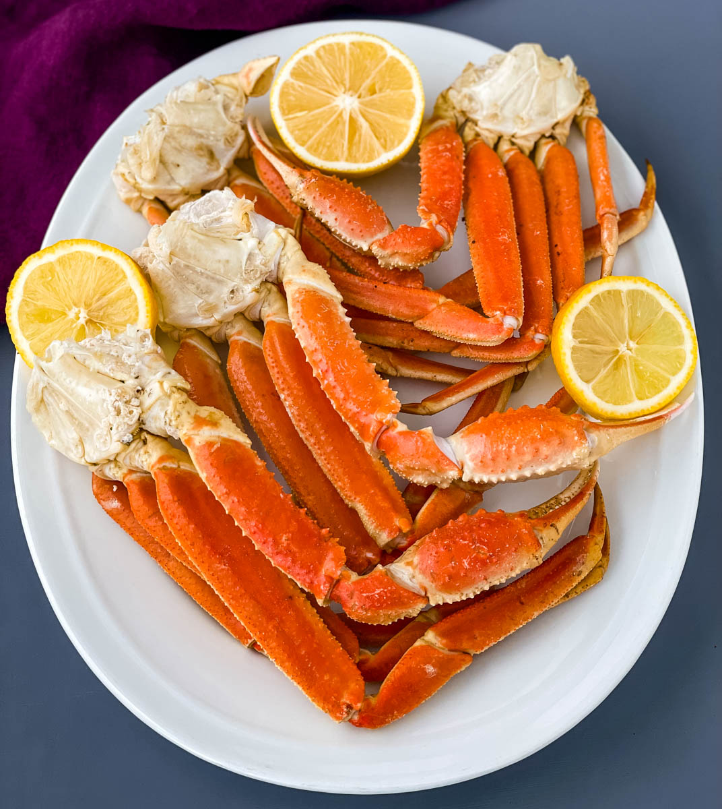

Crab legs

My all time favorite food is king crab legs, and for good reason.
the taste is quite unique easily being paired with lemon and butter.
although delicious there is not much to this recipe, while keeping it short and simple. its flavors are top notch,
this recipe doesnt add too many flavors instead it tries to capitalize on the distict flavor of the crab while only
adding the slight enhancments of lemon and melted butter with some minced garlic.
INGREDIENTS
- frozen king crab legs
- lemons or limes
- unsalted/salted butter
- garlic
- (preference) oldbay seasoning
cooking steps
- fill up a large pot with water, season the water with oldbay seasoning or seasoning of your liking
- squeeze a whole lemon or 2 limes into the water
- when the water comes to a small boil put the crab legs into the water
- crab legs dont take long to cook at all so when the outside color of the crablegs start changing color to a bright orange/red remove from heat
- for a dipping sauce you will want to melt some butter and put some chopped garlic in the butter
- and enjoy, crab legs really are that easy to make
main page